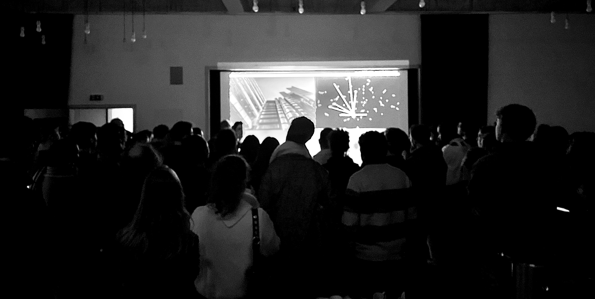
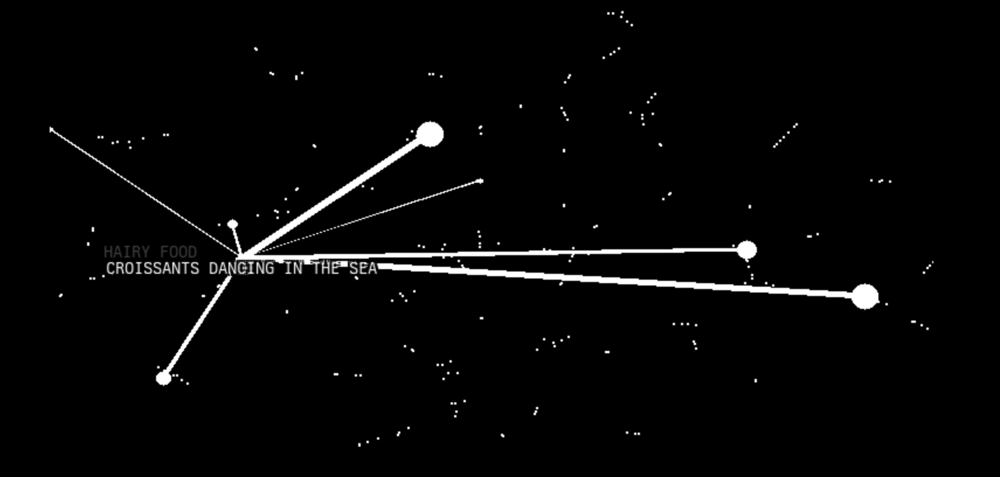
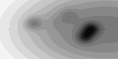

Electronic Life was debuted at the Late @ Tate Britain “FREEDOM FREQUENCIES”.
AI is the new disruptor.
Come to the Taylor Digital Studio at 8pm to talk directly with Electronic Life - a live AI entity who will respond to your thoughts and queries on new technology and art making.
And meet with young people from Element who have been experimenting with, and challenging, creative AI tools. Through the generation of new texts, images, and music they have generated playful, lyrical, and often surreal motifs to express ideas about their lives. Their work will be presented throughout the evening by ‘Electronic Life’, which has been built from data captured throughout their creative making process.
Electronic Life was devised in collaboration between Ed D’Souza and Sunil Manghani from Winchester School of Art, University of Southampton with members of Element, Tate Collective Producers, and Tom Savage at Alan Turing Institute.
Element produces creative projects with care-experiences young people who are often from marginalised and minoritised communities.
ELECTRONIC LIFE is a combination of over 2000 images and prompts, text embeddings, a large-language model, an image model, and a speech-to-text model all running locally on a MacBook (M2 Pro) not connected to the internet.
Over the course of 8 weeks, participants from Element produced 2000 individual images on DALL-E, spanning a total of around 400 individual prompts.
These were scraped from the DALL-E online history providing an initial dataset for ELECTRONIC LIFE, formed of the collective ideas of participants.
Whilst participants formed their ideas independently, they do not exist in isolation within ELECTRONIC LIFE. The pretrained jina-embeddings-v2-base-en embedding model was used to embed the prompt data into vector space.
\[\text{prompt} \xrightarrow{\text{Jina Embeddings}} x \in \mathbb{R}^{276}\]
To visualise this collective consciousness of ideas from participants, t-SNE was used to map the high dimensional prompt vectors into a lower, two-dimensional space.
\[x \in \mathbb{R}^{276} \xrightarrow{\text{t-SNE}} x \in \mathbb{R}^{2}\]

To explore this space visually, a parametric background function was specified. The function used is similar to a radial basis function, where each prompt ‘weights’ the space in a given location based on the distance to the evaluated location. By providing a set of ever-changing synthetic weights, the background function can be made to warp and shift around the embedded prompts.
This is implemented in JAX, enabling two important aspects.
- The ability to calculate and draw the background dyanmically and in real time with
vmap. - Analytical derivatives through JAX’s automatic differentiation.

Using this differentiable background, weighted around the embedded prompts, a momentum-based gradient descent is performed, providing a way of exploring the common themes and ideas. The momemtum term encourages movement throughout the space, and the parametric background ensures that individual ideas are emphasised.
Throughout the event, audience members are invited to interact with ELECTRONIC LIFE. A number of actions occur when an interaction is triggered.
The audience member speaks into a microphone and OpenAI’s Whisper model performs a speech-to-text conversion.
The resulting text is embedded into the same space as the previously embedded prompts, and cosine similarity is used to return the ‘nearest’ prompt within the dataset, which we will call the memory.
An LLM is prompted to relate the audience members comment with the memory within ELECTRONIC LIFE’s internal dataset. A thread is created and inference is performed using Zephyr 7B-\(\beta\) via llama.cpp to generate a response.
Simultaneously we obtain the image associated with the memory, another thread is created and the image model BakLLaVA is prompted to describe the image within the dataset.
Finally, the background function is weighted around the memory in the two-dimensional embedding space and all information returned using the pyttsx3 text-to-speech library.
Electronic Life: devised by Ed D’Souza and Sunil Manghani from Winchester School of Art, University of Southampton with members of Element and Tom Savage at Alan Turing Institute, with support from Tate Learning Partnerships, Tate Collective Producers and Tate Young Peoples Programmes. Supported by University of Southampton.